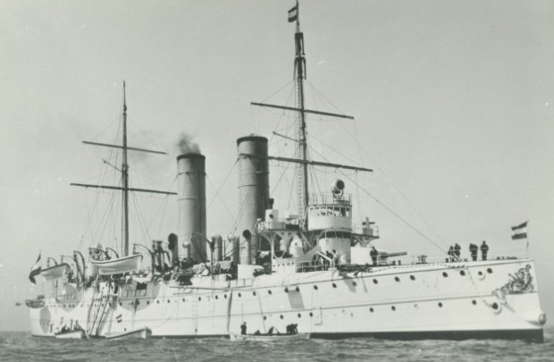
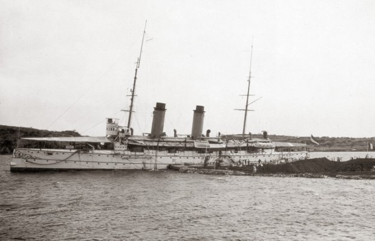
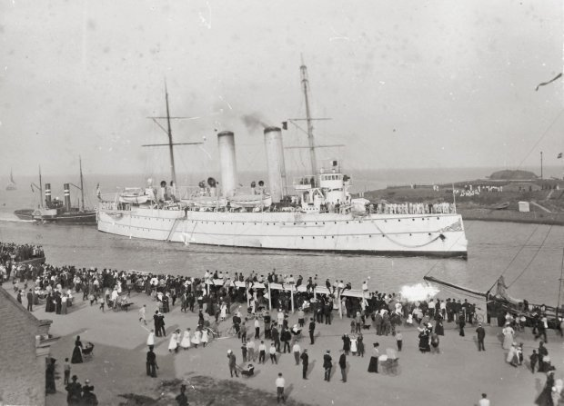
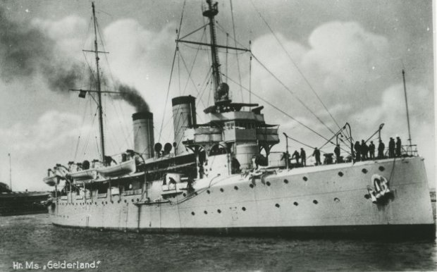
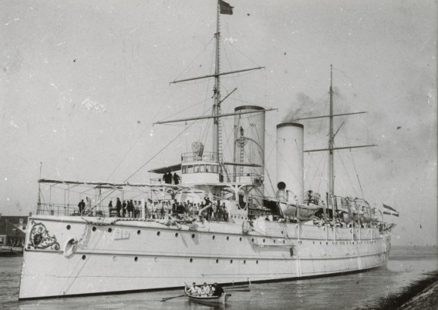
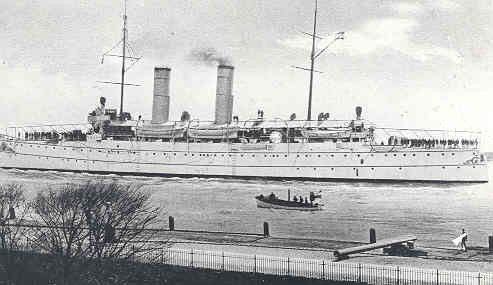

| Naam | Holland | Zeeland | Friesland |
|---|---|---|---|
| Foto |  |  |  |
| Waterverplaatsing | 4030 ton | ||
| Snelheid | 20 knopen | ||
| Bemanning | 325 | ||
| Afmetingen | 95m x 14,8m x 5,4m | ||
| Bewapening | 2x 150mm No. 3 (2x1) 6x 120mm No. 2 (6x1) 4x Krupp 75mm No. 2 (4x1) 4x 37mm (4x1) 2x 450mm torpedobuizen |
||
| Vliegtuigen | - | ||
| In dienst | 1 juli 1898 | 1 juni 1898 | 16 januari 1898 |
| Uit dienst | 1920 | 1924 | 1913 |
| Naam | Gelderland | Noordbrabant | Utrecht |
|---|---|---|---|
| Foto |  |  |  |
| Waterverplaatsing | 4030 ton | ||
| Snelheid | 20 knopen | ||
| Bemanning | 325 | ||
| Afmetingen | 95m x 14,8m x 5,4m | ||
| Bewapening | 2x 150mm No. 3 (2x1) 6x 120mm No. 2 (6x1) 4x 75mm Krupp No. 2 (4x1) 8x 37mm (?) 4x 37mm revolver (4x1) 2x 75mm (2x1) 2x 75mm mortieren (2x1) Vanaf 1939: 8x 120mm No. 2 (8x1) 3x 75mm Krupp No. 2 (3x1) 1x 75mm No.1 Semi-Auto |
2x 150mm No. 3 (2x1) 6x 120mm No. 2 (6x1) 4x 75mm Krupp No. 2 (4x1) 4x 37mm (4x1) 2x 450mm torpedobuizen Vanaf 1926: 1x 75mm (1x1) |
2x 150mm No. 3 (2x1) 6x 120mm No. 2 (6x1) 4x 75mm Krupp No. 2 (4x1) 4x 37mm (4x1) 2x 450mm torpedobuizen |
| Vliegtuigen | - | ||
| In dienst | 15 juli 1900 | 1 maart 1900 | 1 maart 1901 |
| Uit dienst | Op 17 mei 1940 door de Duitsers veroverd en op 16 juli 1944 gezonken als 'Niobe' van de Kriegsmarine | Tot zinken gebracht 17 mei 1940 | 1913 |